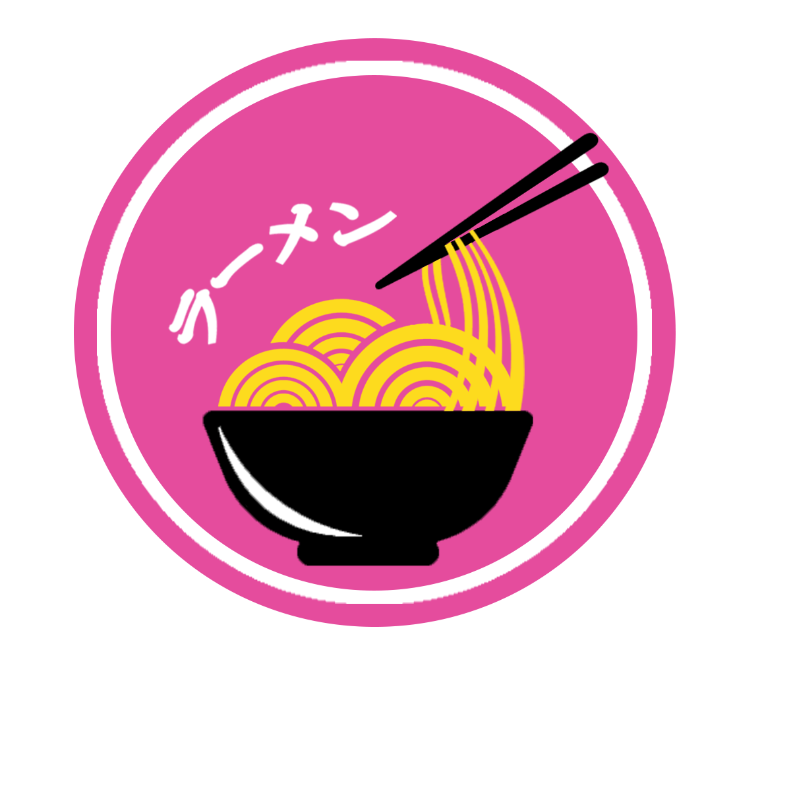
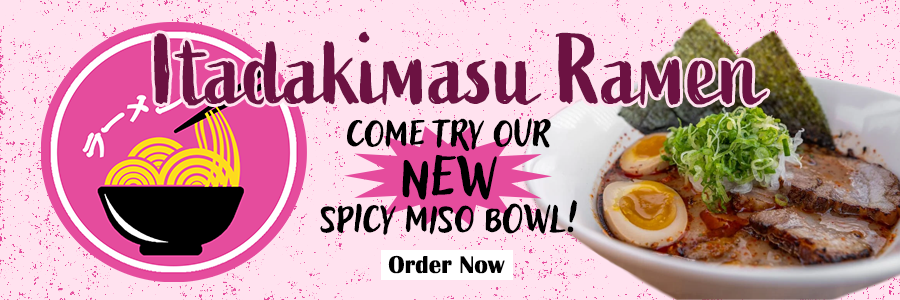

My Projects!
Logo
Advertisment
Business Card Front

Business Card Back

For this project I put my drawing skills to the test. I was to make a logo, ad, and business card for a fake company. One of my favorite flowers are cherry blossoms and I love ramen so much. So I thought "Why not use those to make my project?" And now you can see the results of all my hard work! I hope you enjoy :D
- The Brush Tools
- These tools are the main things I used to draw the cherry blossoms on the front of the card. But with some reference images I was able to draw something I believe looks quite nice
- The Mixer Brush
- With this brush I made the wave effects on the card. I took colors that I used for the cherry blossoms and with many and I mean MANY attempts of mixing and drawing I was finally able to create a wave I liked
- Selection, Shape, and Mask tools
- These tools allowed me to make the logo and the symbols on the back of the card. My drawing skills didn't come into play here and I instead found images online I liked. I then selected the part I wanted and hide the image so I'd have a blank selection made. With that done I created a shape underneath it and masked the selection so only the selected part would show. I'm sure there's an easier way to do this but I found it nice to only have to change the shape color if I wanted the color changed instead of having to use the fill bucket on every part